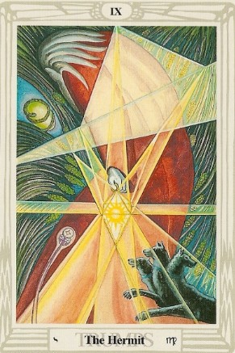

Hoy es un buen día para tomar decisiones importantes. Confía en tu intuición y no dudes en avanzar con determinación.
Es un día para buscar estabilidad y tranquilidad. Evita conflictos innecesarios y prioriza tu bienestar emocional.
Las oportunidades para aprender algo nuevo están a tu alcance. Mantente abierto a las ideas y exprésate con claridad.
Hoy es un día para escuchar más y hablar menos. La paciencia será clave para evitar malentendidos innecesarios.
Tu magnetismo natural atraerá la atención de los demás. Usa tu liderazgo con sabiduría y sé generoso con quienes te rodean.
La organización y la disciplina te ayudarán a resolver pendientes. Aprovecha el día para enfocarte en detalles importantes.
Hoy el equilibrio será fundamental. No permitas que la indecisión te paralice, confía en tu criterio y avanza con confianza.
Un asunto pendiente podría resolverse de forma inesperada. Mantente atento y aprovecha las oportunidades que surjan.
Es un buen momento para hacer planes de futuro. Confía en tu visión y mantente firme en tus ideales.
Tu esfuerzo y dedicación están dando frutos. Sigue en tu camino y mantén la disciplina para alcanzar tus metas.
Las ideas innovadoras estarán fluyendo con facilidad. Comparte tu creatividad con los demás y aprovecha este impulso.
Tu intuición será tu mejor guía hoy. Dedica tiempo a la introspección y busca respuestas en tu interior.
El Tarot de Thoth te trae el mensaje de El Ermitaño, una carta que representa la introspección, la búsqueda de sabiduría y la iluminación interior. 🔥🕯️
El Ermitaño simboliza el camino del conocimiento y la necesidad de mirar dentro de uno mismo para encontrar respuestas.
Es un momento ideal para hacer una pausa y reflexionar sobre tus decisiones y tu propósito de vida.
Hoy es un día para evitar distracciones externas y conectarte con tu verdadero yo.
La soledad no siempre es negativa. Aprovecha este tiempo para aprender más sobre ti mismo.
Puedes necesitar espacio para comprender tus emociones. La paciencia es clave.
Las respuestas que buscas llegarán, pero es mejor actuar con prudencia y planificación.
No es un día para tomar riesgos financieros. Reflexiona antes de actuar.
El descanso y la meditación serán claves para tu bienestar.